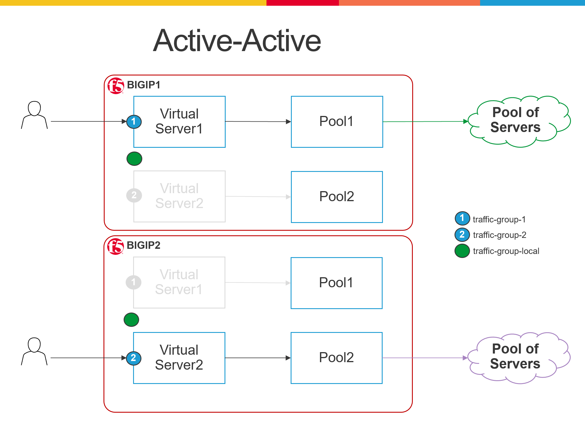
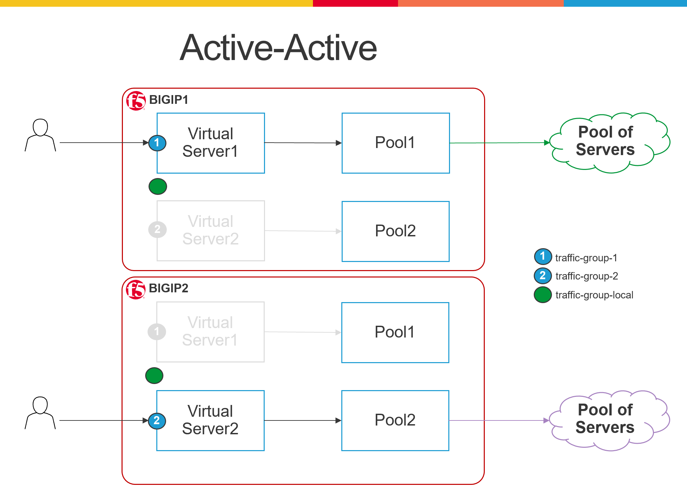

Active-Active API Security with F5 BIG-IP APM
A customer bought several pairs of F5 LTM + APM + AWAF to be deployed API Security solution. The customer asked how to configure the solution to be active-active. This means that both F5 instances in a pair have to actively process the incoming traffic.
The default Active-Standby setup in F5 has 1 traffic group for floating objects (traffic-group-1) and 1 traffic group for non-floating objects (traffic-group-local-only). The floating traffic group, e.g. traffic-group-1, is usually active in the first F5 device and standy in the second F5 device, hence Active-Standby. The Active-Active setup in F5 requires minimum 1 additional floating traffic group which it is active on the second F5 device and standby in the first F5 device.
 

According to https://support.f5.com/csp/article/K13983, all APM related objects must be configured in a single traffic group in a multiple traffic group environment. This means that HA configurations for APM traffic group is only active-standby. A specific solution is required to allow Active-Active traffic processing in APM Active-Standby.